PHẦN I. Câu trắc nghiệm nhiều phương án lựa chọn
Mỗi câu có 4 phương án, chỉ chọn một đáp án đúng (0,25 điểm).
1
Đồ thị dao động điều hòa của một vật như hình vẽ. Phương trình dao động của vật là:

2
Cho đồ thị li độ theo thời gian của một vật dao động điều hoà như hình vẽ. Phát biểu nào sau đây là đúng?

3
 Li độ của một vật dao động điều hòa phụ thuộc vào thời gian
Li độ của một vật dao động điều hòa phụ thuộc vào thời gian  được biểu diễn bởi đồ thị như hình bên. Chu kì dao động của vật là
được biểu diễn bởi đồ thị như hình bên. Chu kì dao động của vật là4
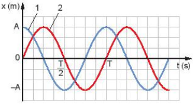
Cho đồ thị như hình vẽ bên. Độ lệch pha của hai dao động này là
5
 Một chất điểm dao động điều hòa có đồ thị biểu diễn sự phụ thuộc của li độ x theo thời gian t như hình bên. Nửa chu kì dao động của chất điểm bằng
Một chất điểm dao động điều hòa có đồ thị biểu diễn sự phụ thuộc của li độ x theo thời gian t như hình bên. Nửa chu kì dao động của chất điểm bằng6
Đồ thị biểu diễn hai dao động điều hòa cùng phương, cùng tần số, cùng biên độ $A$ như hình vẽ. Hai dao động này luôn
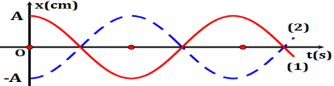
7
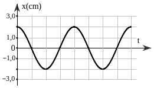
Một vật dao động điều hòa trên trục Ox. Hình bên là đồ thị biểu diễn sự phụ thuộc của li độ x vào thời gian t. Biên độ của vật dao động bằng8
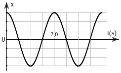
Một vật dao động điều hòa trên trục Ox. Hình bên là đồ thị biểu diễn sự phụ thuộc của li độ x vào thời gian t. Tần số của dao động là9
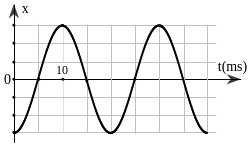
Một vật dao động điều hòa trên trục Ox. Hình bên là đồ thị biểu diễn sự phụ thuộc của li độ x vào thời gian t. Chu kì của của dao động là10
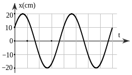
Một vật dao động điều hòa trên trục Ox. Hình bên là đồ thị biểu diễn sự phụ thuộc của li độ x vào thời gian t. Pha ban đầu của dao động là11
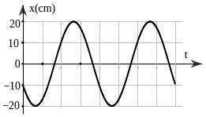
Một vật dao động điều hòa trên trục Ox. Hình bên là đồ thị biểu diễn sự phụ thuộc của li độ x vào thời gian t. Pha ban đầu của dao động là12
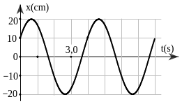
Hình bên là đồ thị biểu diễn sự phụ thuộc li độ x theo thời gian t của một vật dao động điều hòa. Phương trình dao động của vật là13
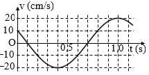
Một vật dao động điều hòa theo phương trình $x=A\mathrm{cos}\left( \omega t+\varphi\right)$. Hình bên là đồ thị biểu diễn sự phụ thuộc của vận tốc v của vật theo thời gian t. Ở thời điểm t = 0,2 s, pha của dao động có giá trị bằng14
Cho 2 dao động cùng phương, có phương trình lần lượt là: $x_1 = 10\cos(100\pi t - 0{,}5\pi)$ (cm), $x_2 = 10\cos(100\pi t + 0{,}5\pi)$ (cm). Độ lệch pha của 2 dao động có độ lớn là:
15
Một vật dao động điều hòa dọc theo trục Ox. Hình bên là đồ thị biểu diễn sự phụ thuộc của li độ $x$ vào thời gian $t$. Tần số góc của dao động là
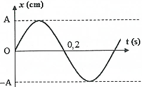
16
Hai vật dao động điều hòa có li độ được biểu diễn trên đồ thị li độ – thời gian như vẽ. Phát biểu nào dưới đây mô tả đúng tính chất của hai vật?
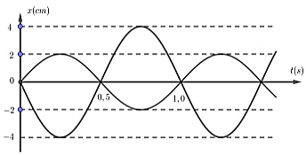
17
Đồ thị dưới đây biểu diễn $x = A\cos(\omega t + \phi)$. Phương trình dao động là
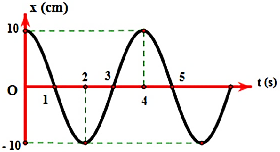
18
Một chất điểm dao động điều hòa quanh vị trí cân bằng $O$ với chiều dài quỹ đạo $L=8$ cm. Hình bên là đồ thị biểu diễn pha dao động của chất điểm theo thời gian $t$. Phương trình dao động của chất điểm là
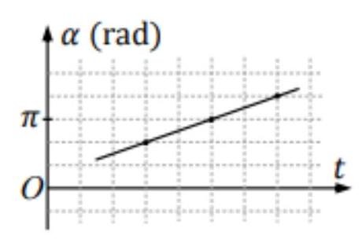